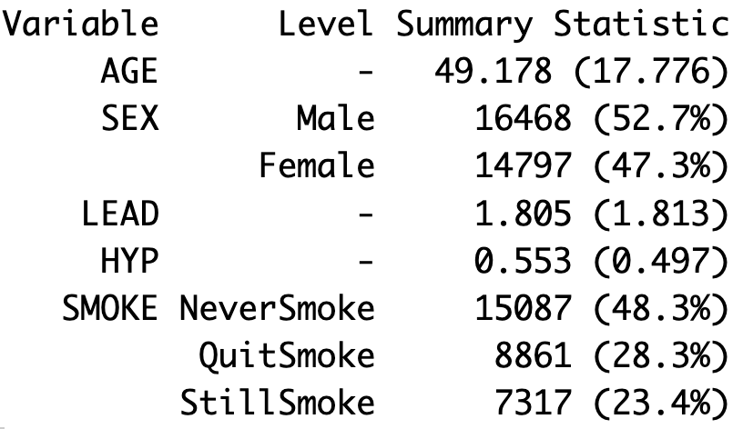

library(testthat)
library(tidyverse)18 Functions
Functions are an important part of creating reproducible research and clean code. So far we have been using many useful functions from base R and available packages by learning how to specify the inputs and use the output. We will now shift to writing our own functions. To start, we need to understand the arguments and return values of functions as well as the scope of objects used or created within functions. We will also talk about how to document, test, and debug your functions so that we can ensure they are correct and easy to use. We will use the testthat package to create simple tests for our functions.
One type of function we have already written is an anonymous functions. These are functions that are not saved or given a name. These functions typically exist if we want to input a function argument to another function but we don’t want to save that function for future use. For example, in the code below, I use the apply() function on a data frame to find the proportion of observations that are NA for each column. Note that since the function is so short it is easy enough to define within the apply() function call by just including the code for what is returned. For functions with more than one line, you would not want use an anonymous function and would need to define it.
df <- data.frame(x1 = c(NA, 1, 1, 0),
x2 = c(0, 1, 0, 0),
x3 = c(0, 0, NA, NA))
apply(df, 2, function(x) sum(is.na(x))/length(x))
#> x1 x2 x3
#> 0.25 0.00 0.5018.1 Components of a Function
To start storing functions we need to give them a name and define their input (arguments) and output (return values). To do so we assign a function name to a function object as shown below. The argument below has two arguments arg1 and arg2 and returns output.
function_name <- function(arg1, arg2){
code to compute output from arguments
return(output)
}Take a look at the simple function below. The name of this function is say_hello and there is no input (arguments) or output (return values) associated with this function. Instead it just prints out a hello statement.
say_hello <- function(){
print("Hello!")
}Running the code above creates an object called say_hello of the class function. We can run this function by calling it using empty parenthesis (since there are no input arguments).
class(say_hello)
#> [1] "function"say_hello()
#> [1] "Hello!"We can add to this function by instead adding our first argument called name which is a string and then printing “Hello, [name]!”. Below, I use the paste0() function which concatenates the string arguments into a single string.
say_hello <- function(name){
print(paste0("Hello, ", name, "!"))
}
say_hello("Weici")
#> [1] "Hello, Weici!"18.1.1 Arguments
Arguments are inputs passed to functions so that they can complete the desired computation. We can also have default values for these arguments. In this case, those arguments do not have to be specified when calling the function. For example, rnorm(10) uses the default value for the mean to understand which distribution we want to use. Below, we find the Euclidean distance from a given (x,y,z) coordinate and the origin (0,0,0) with a default value of zero for all values.
dist_to_origin <- function(x=0,y=0,z=0){
return(((x-0)^2 + (y-0)^2 + (z-0)^2)^(0.5))
}If I call this function with no arguments, it will use all the default values.
dist_to_origin()
#> [1] 0However, if I call the function with one argument, it will assume this first argument is x. Similarly, it will assume the second value is y and the third value is z. If I want to give the arguments without worrying about the order, I can specify them using their names (see the last line below).
dist_to_origin(1)
#> [1] 1
dist_to_origin(1,2)
#> [1] 2.24
dist_to_origin(1,2,3)
#> [1] 3.74
dist_to_origin(y=2,z=3)
#> [1] 3.61Besides passing in numeric values, strings, data frames, lists, or vectors, we can also pass other types of objects in as arguments to a function. For example, we can take another function in as an argument. In the example below, I create two functions. The first function calculates the euclidean distance between two points. The second one computes the distance from a given point to the origin. Note that this updated function to find the distance to the origin is more flexible and written in a cleaner manner. First, it allows us to input a point of any length. Second, it allows us to specify the distance function used. This also demonstrates calling a function within another function.
Try out calling euclidean_dist() and dist_to_origin() on different values below.
euclidean_dist <- function(pt1, pt2){
# Finds the Euclidean distance from pt1 to pt2
return(sqrt(sum((pt1-pt2)^2)))
}
dist_to_origin <- function(pt1, dist_func = euclidean_dist){
# Finds the distance from pt1 to the origin
origin <- rep(0,length(pt1))
return(dist_func(pt1,origin))
}
dist_to_origin(c(1,1))
#> [1] 1.4118.1.2 Practice Question
Write a function that calculates the Manhattan distance between two points pt1 and pt2, where the Manhattan distance is the sum of absolute differences between points across all the dimensions. To check your solution, you should check that the distance between points pt1 <- c(1,-1,1.5) and pt2 <- c(0.5, 2.5, -1) is 6.5.
# Insert your solution here:Another type of argument to a function can be a formula. If you have used linear regression in R, you have seen this in practice. Below, we fit a simple linear model where we specify a model formula y~x as the first argument. We are also using default arguments for rnorm() on the first two lines.
x <- rnorm(mean=3, n=100)
y <- x + rnorm(sd = 0.2, n=100)
lm(y~x)
#>
#> Call:
#> lm(formula = y ~ x)
#>
#> Coefficients:
#> (Intercept) x
#> -0.00986 1.0044518.1.3 Return Values
If you read the documentation for lm() by calling ?lm we can see that there are a lot of arguments that have default values. The other thing to note about the lm documentation is that there are multiple values returned. In fact, the type of object returned is a list containing all the different things we want to know about the results such as the coefficients.
simp_model <- lm(y~x)
simp_model$coefficients
#> (Intercept) x
#> -0.00986 1.00445Since R only allows you to return one object, packaging the return values into a list is a useful way to return multiple outputs from a function. In the example below, we create a function coin_flips() that takes in a probability prob and a number of iterations n (with default value 10) and simulates n coin flips where the coin has a probability of prob of landing on heads. The function returns the percentage of trials that were heads and the results of the coin flips. We can access each of these returned values by using the names percent_heads and results.
coin_flips <- function(prob, n = 10){
# Flips a coin with probability prob of heads for n trials
results <- rbinom(n = n, size = 1, prob = prob)
return(list(percent_heads = sum(results)/n, results = results))
}
trial <- coin_flips(0.6)
trial$percent_heads
#> [1] 0.6
trial$results
#> [1] 0 1 1 0 1 0 0 1 1 1One important thing to know about R and return values is that if you don’t specify a return statement, it will by default return the last computed object. In the example below, the value returned is 3. Avoid unexpected behavior by always using the return() function.
ex_return <- function(){
x <- 2
y <- 3
}
result <- ex_return()
result
#> [1] 318.1.4 Scope of Objects
When working within functions and calling functions, we want to remember the scope of our objects. global objects are objects defined outside of functions. These values can also be accessed outside or inside functions. For example, the object y is defined outside of a function and so is a global object meaning we can use its value inside the function.
y <- "Cassandra"
ex_scope <- function(){
return(paste("Hey,", y))
}
ex_scope()
#> [1] "Hey, Cassandra"If we change the value of a global object within a function however, it does not update the value outside of the function. Below, we add 1 to y inside the function but it does not change the value of y after the function is done. Every time we run a function, it creates a new sub-environment inside that can access the values of global objects but also creates its own local objects. In this case, the function creates its own object y, which is a local object that is a copy of the original object.
As another example, the function also creates a local object called z which ceases to exist after we run the function. If we try to print z on the last line we would get an error that z is not found. All objects created inside functions only exist in that sub-environment and are erased when we are no longer in the function. Therefore, we want to make sure we return any values we want to store.
y <- 5
ex_local <- function(x){
y <- y+1
z <- x*y
return(y+z)
}
ex_local(2)
#> [1] 18
y
#> [1] 5To update global objects within a function, you can use the <<- operator (global assignment operator). This looks for an object in the global environment and updates its value (or creates an object with this value if none is found). For example, the function below will update the value of the global objects y. As a general practice, we should be careful using global objects within a function and it often is safer to use input arguments and return values instead.
y <- 5
ex_update_global <- function(x){
y <<- y+1
return(y+x)
}
ex_update_global(2)
#> [1] 8
y
#> [1] 618.1.5 Functions within Functions and Returning Functions
Sometimes we will see functions written inside other functions. Writing functions within functions can be useful to separate out some part of the code or to give that function access to the local environment objects. In the example below, the inner function has access to the value of x even though we have not passed it as an argument. The downside of this structure is the function add_x() does not exist outside the function so we cannot call it in other code.
add_x_seq <- function(x){
# Adds x to 1:10 and returns
add_x <- function(y){
return(y+x)
}
return(add_x(1:10))
}
add_x_seq(3)
#> [1] 4 5 6 7 8 9 10 11 12 13
#add_x(3) # would return an errorIf we wanted to use the created function, we can return it. In the updated example below we return an anonymous function. By doing so, we create a unique function for each x value.
add_x <- function(x){
# Returns a function to add x to any value
return(function(y) y+x)
}
add2 <- add_x(2)
add2(1:10)
#> [1] 3 4 5 6 7 8 9 10 11 12
add10 <- add_x(10)
add10(1:10)
#> [1] 11 12 13 14 15 16 17 18 19 2018.2 Documenting Functions
The functions we wrote had minimal comments or documentation. When creating functions, we should document them including any information about the format of the input and output. We do so using comments that precede the function and start with #'. This style of function documentation is called roxygen. An example is given below for our Euclidean distance function. You can see we provided information about the two arguments and the return value. The roxygen style is the style used for published R packages.
#' Euclidean distance
#'
#' @description Calculates the Euclidean distance between two points
#'
#' @param pt1 numeric vector
#' @param pt2 numeric vector
#' @return the Euclidean distance from pt1 to pt2
euclidean_dist <- function(pt1, pt2){
return((sum((pt1-pt2)^2))^0.5)
}Each comment should start with a pound sign and back-tick. The first block of lines is the introduction and the first line of the comment block is reserved for the title. This the first information we want the user to know about the function and should be a single line. For all other information besides the title, we will use certain tags.
@descriptionThis tag should be placed first and is a place where you can briefly put more information about the function beyond the title. You can also add more details with the@detailstag.@paramThis tag comes before each input argument’s description. For each argument, we want to include the name and type, but we might also include information on how that argument is used.@returnThis tag documents the returned object and specifies the type. If we are returning a list, then we might include information about each object in the list.
18.2.1 Practice Question
Write the documentation for our coin flip function below.
#' Insert your solution here:
coin_flips <- function(prob, n = 10){
results <- rbinom(n = n, size = 1, prob = prob)
return(list(percent_heads = sum(results)/n, results = results))
}18.3 Debugging and Testing
As we write more complex code and functions, we want to learn how to test our code. When it comes to testing code, a good mantra is test early and test often. So avoid writing too much code before running and checking that the results match what you expect. Below are some simple principles that are applicable to debugging in any setting.
- Start simple and build up in steps.
- Check your syntax by checking that all parentheses (), brackets [], and curly braces {} match where you expect.
- Check that object names are correct and you don’t have any accidental typos or that you are accidentally using the same name for different objects.
- Restart your R session and re-run all code.
- Check if you use the same object name for different objects.
- Localize your error by printing out the values of objects at each stage or use break points in R.
- Modify your code one piece at a time and check all test values again to avoid introducing new errors.
For example, suppose I want to write a function that finds any pairs of numeric columns with a Pearson correlation with absolute value above a certain threshold. We want our code to be structured so that it makes sense, is flexible to our needs, and avoids unnecessary work. To start building up this function, I need to first think about the inputs and outputs I want. This is called a top-down approach. Sketching out the overall steps you your code needs to complete before writing any of them can help to improve your structure and avoid having to rewrite large pieces.
In this case, my input to this function will be a data frame which could contain a mixture of numeric and categorical columns and a threshold correlation value with a default value of 0.6. I want to return a data frame with the pairs and their correlation. This gives me a template for my documentation.
#' Find pairs of columns with strong correlation
#'
#' @description Finds all pairs of numeric columns with strong Pearson
#' correlation and returns the pairs in a data frame
#'
#' @param df data frame
#' @param threshold positive numeric threshold value to define a
#' strong correlation as one with absolute value above the threshold
#' @return data frame with one row for each pair of columns
#' with high correlation containing the names of the columns
#' and the corresponding correlation
high_cor <- function(df, threshold = 0.6){
return()
}Next, to start simple I want to create some artificial data I can use to test my data on. I use the mvnrorm() function from the **MASS* package (Venables and Ripley 2002) to control the correlation between my columns and add in a categorical column that should be ignored by my function.
set.seed(4)
cor_mat <- matrix(c(1, 0.9, 0.4, 0,
0.9, 1, 0.3, 0,
0.4, 0.3, 1.0, 0,
0, 0, 0, 1.0), nrow=4)
m <- round(MASS::mvrnorm(100, c(0,0,0,0), Sigma = cor_mat),3)
test_df <- as.data.frame(m)
test_df$V5 <- sample(c("A", "B", "C"), 100, replace = TRUE)
high_cor(test_df)
#> NULLWe can use the cor() function to find the Pearson correlation.
cor(test_df[,-5])
#> V1 V2 V3 V4
#> V1 1.0000 0.8920 0.47805 0.02035
#> V2 0.8920 1.0000 0.33719 0.04969
#> V3 0.4780 0.3372 1.00000 0.00848
#> V4 0.0204 0.0497 0.00848 1.00000Great, now let’s roughly sketch out the steps we will need to complete.
- Subset the data to only numeric columns.
- Find the correlation of all pairs of columns.
- Check if a pair has a strong correlation.
- If so, add it to our results.
Let’s start with step 1. Before putting code into our function, I am going to test my steps on my example data. To do so, I will use the select_if() function from the dplyr package.
df_numeric <- select_if(test_df, is.numeric)
head(df_numeric)
#> V1 V2 V3 V4
#> 1 0.615 0.069 -0.788 -0.518
#> 2 -0.642 -0.205 -1.557 -1.522
#> 3 1.979 1.809 0.515 0.008
#> 4 2.562 2.190 1.763 0.754
#> 5 -1.982 -1.626 -1.269 -0.139
#> 6 -0.241 -0.297 -0.471 1.076Great, this worked! Next we need to find the strong correlations. Now, we can use the correlation function to find the correlations. I then want to iterate through all pairs to check if the absolute value of the correlation is above our threshold. I will use a loop for this. In my first attempt, I create a nested for loop where i will be one column and j will be my second column in the pair. I can see I must have some mistakes because I am getting pairs where i and j are equal to each other and I also am getting zeros. Note how we are using print statements. This helps me to identify that I need to add parentheses for the first for loop and I need to update j to start at i+1.
cor_mat <- cor(df_numeric)
for (i in 1:nrow(cor_mat)-1){
for (j in (i:nrow(cor_mat))){
print(paste(i,j))
}
}
#> [1] "0 0"
#> [1] "0 1"
#> [1] "0 2"
#> [1] "0 3"
#> [1] "0 4"
#> [1] "1 1"
#> [1] "1 2"
#> [1] "1 3"
#> [1] "1 4"
#> [1] "2 2"
#> [1] "2 3"
#> [1] "2 4"
#> [1] "3 3"
#> [1] "3 4"Let’s try again. This time I will create a variable n which will be the number of columns. Much better!
cor_mat <- cor(df_numeric)
n <- nrow(cor_mat)
for (i in 1:(n-1)){
for (j in ((i+1):n)){
print(paste(i,j))
}
}
#> [1] "1 2"
#> [1] "1 3"
#> [1] "1 4"
#> [1] "2 3"
#> [1] "2 4"
#> [1] "3 4"Next, I need to add an if statement to check if there is a correlation above the given threshold. In this case to check if my code is working correctly, I will use a print statement for only those that meet the condition.
n <- nrow(cor_mat)
for (i in 1:(n-1)){
for (j in ((i+1):n)){
if(abs(cor_mat[i,j]) > 0.6){
print(paste(i,j))
}
}
}
#> [1] "1 2"I’ve sketched out my code more thoroughly so I have a good idea of how I want to compute my result. I will move to writing my function. Importantly, I need to make sure that I use my input arguments now rather than my test values! In the version below I also add in a results data frame that I use to keep track of my result and I add an additional argument for how to deal with NA values in calculating the correlations. The output matches what I expect for my test data frame.
#' Find pairs of columns with strong correlation
#'
#' @description Finds all pairs of numeric columns with strong Pearson
#' correlation and returns the pairs in a data frame
#'
#' @param df data frame
#' @param threshold positive numeric threshold value to define a
#' strong correlation as one with absolute value above the threshold
#' @param use an optional character string giving a method for
#' computing correlations in the presence of missing values.
#' This must be (an abbreviation of) one of the strings "everything",
#' "all.obs", "complete.obs", "na.or.complete", or
#' "pairwise.complete.obs".
#' @return data frame with one row for each pair of columns
#' with high correlation containing the names of the columns
#' and the corresponding correlation
high_cor <- function(df, threshold = 0.6, use = "everything"){
# create result data frame
res <- data.frame(name1 = vector("character"),
name2 = vector("character"),
cor = vector("numeric"))
# subset to numeric columns
df_numeric <- select_if(df, is.numeric)
# find correlations and variable names
cor_mat <- cor(df_numeric, use = use)
# go through pairs to find those with high correlations
n <- nrow(cor_mat)
for (i in 1:(n-1)){
for (j in ((i+1):n)){
if(abs(cor_mat[i,j]) > threshold){
res <- add_row(res,
name1 = colnames(cor_mat)[i],
name2 = colnames(cor_mat)[j],
cor = cor_mat[i,j])
}
}
}
return(res)
}
high_cor(test_df)
#> name1 name2 cor
#> 1 V1 V2 0.892We can prevent unexpected behavior of our functions by using stop() functions to limit a function to be run on certain types of arguments. This is helpful if other people will be using your function or if you might forget any assumptions you built into the function. The stop() function stops the execution of the current expression and returns a message. In the example below, we check to make sure that the point given is a numeric vector. Further, we check to see if the vector has length zero and return 0 if it does.
#' Distance to the origin
#'
#' @description Calculates the distance from a single numeric vector
#' to the origin
#'
#' @param pt1 numeric vector
#' @param dist_fun function to compute the distance with, default is
#' Euclidean distance
#' @return the distance from pt1 to origin in the same dimension
dist_to_origin <- function(pt1, dist_func = euclidean_dist){
# check format of input
if(!(is.vector(pt1) & is.numeric(pt1))){
stop("pt1 must be a numeric vector")
}
if(length(pt1) == 0){
return(0)
}
# calculate the distance
origin <- rep(0,length(pt1))
return(dist_func(pt1,origin))
}18.3.1 Unit tests
We know our function high_cor() works on a single example. To thoroughly test our functions, we want to run them on several different input values. These types of tests are called unit tests. We try to vary these test values to cover a wide range of possibilities. For example, for a numeric argument, test positive and negative input values. For a vector input, test an empty vector, a vector of length one, and a vector with multiple values. If you discover an error, we need to go back to debugging mode to resolve it.
To test our function, we will use the testthat package (Wickham 2011). This includes several functions that can check our expectations. For example, there is the expect_equal(object, expected) function which checks whether object matches expected up to a given numeric tolerance. If we want to only check the values of our objects but not the attributes, we can set the argument ignore_attr = FALSE. Other functions from this package are expect_error(object) which can be used to test that an error message was returned and expect_true(object) which can be used to test whether a condition is met.
testthat::expect_equal(paste0("A","B"), "AB")
testthat::expect_true(mean(c(1,2,3)) > 1)Below I demonstrate some tests for the dist_to_origin() function. My tests here focus on the format of the vector. We should test each function separately so I would write a separate batch of tests for the Euclidean distance function.
# check error message for character vector
expect_error(dist_to_origin(c("A")),
"pt1 must be a numeric vector")
# check error message for not a vector
expect_error(dist_to_origin(matrix(0)),
"pt1 must be a numeric vector")
# check for empty numeric vector
testthat::expect_equal(dist_to_origin(vector("numeric")), 0)
# check length 1 vector
testthat::expect_equal(dist_to_origin(c(2)), 2)
# check length 3 vector
testthat::expect_equal(dist_to_origin(c(2,8.5,3)), 9.233093,
tolerance = 0.0001)18.3.2 Practice Question
Below I have written a series of tests for the function high_cor() with different data frame sizes and types of columns. Unfortunately, not all the tests are working. Use your debugging skills to fix the function to pass the tests and write at least one additional test.
# mixed data frame - should return a data frame with three columns
expect_equal(high_cor(test_df),
data.frame(name1 = "V1", name2 = "V2",
cor = 0.9011631), tolerance = 0.001)
# change threshold - lower, should have three pairs
expect_equal(high_cor(test_df, 0.2)$cor,
c(0.9011631, 0.31765407, 0.30748633),
tolerance = 0.001)
# change threshold - higher, should be empty
expect_equal(high_cor(test_df, 0.95)$cor, vector("numeric"),
tolerance = 0.001)
# single numeric column - should return an empty data frame
expect_equal(high_cor(test_df[,4:5])$cor, vector("numeric"))
# single row - should return an empty data frame
expect_equal(high_cor(test_df[1,])$cor, numeric())18.4 Exercises
For each question below, be sure to document your function(s) using roxygen style documentation.
Standardizing a variable means subtracting the mean and then dividing through by the standard deviation. Create a function called
standardize_me()that takes a numeric vector as an argument, and returns the standardized version of the vector. Write at least three unit tests to check that the result is correct.Suppose we have two binary vectors
xandyeach of length \(n\). Let \(m_{1}\) be the number of indices wherexoryhas a 1 and \(m_2\) be the number of indices where bothxandyequal 1. For example, ifx <- (1,1,0)andy <- c(0,1,0)then \(m_1 = 2\) and \(m_2 =1\). The Jaccard distance is defined as \(1-m_2/m_1\) and measures the dissimilarity between two binary vectors. Write a functionjaccard_dist()that takes in two binary vectors and returns the Jaccard distance between the two.For this question we will use a subset of the
paindata from the HDSinRdata package. Recall, that this data contains binary variables representing where people experienced pain. Write a function that takes in a data frame with all binary columns and returns a matrix with the Jaccard distance between all observations. That is, ifDis the returned matrix, thenD[i,j]is the Jaccard distance between observationiand observationj. Apply your function to the pain data and plot the distribution of these distances.library(HDSinRdata) pain_sub <- pain[1:500,]The function below is supposed to take in a positive integer and calculate how many positive integer divisors it has (other than 1 and itself). However, the function is not getting the right results. Debug the function. Then, think about ways you could improve this function by changing the structure, documentation, and adding argument checks.
total <- 0 divisors <- function(x){ for(i in 1:x){ if (i %% x){ total <- total + 1 i <- i + 1 } } return(total) } divisors(2) #> [1] 1 divisors(6) #> [1] 5In this problem, you will create our own summary table. To start, create a function that takes in a data frame and returns a summary table that reports the mean and standard deviation for all continuous variables and the count and percentage for all categorical variables. An example is given in Figure 18.1. Call your function on the NHANES dataset with the columns selected below to match what is shown in the figure.
nhanes_df <- NHANESsample %>% select(c(AGE, SEX, LEAD, HYP, SMOKE))
